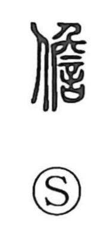

担

Uncategorized
Kun: katsugu, ninau | On: tan
to carry on the shoulder ・ to bear ・ to shoulder
Explanation
Originally written as 擔, this is a phono-semantic character: the hand element signals a manual action, while 詹 supplies the sound tan. The Shuowen glosses the related form 儋 as “to bear on the shoulder.” In later usage 擔 became the standard full form, and 担 is its abbreviated shape. The graph as a whole evokes shouldering a load—carrying or bearing it, even on one’s back.